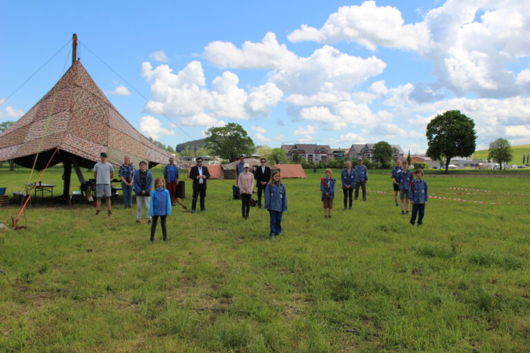

Jungschar
… das ist Spiel, Spass und Spannung!
Der CEVI March trifft sich ungefähr alle 2 Wochen am Samstagnachmittag, um gemeinsam einen Nachmittag (wenn nicht anders angegeben von 14–17 Uhr, Treffpunkt Baumgarten) in der Natur zu verbringen. Lustige Geschichten, abenteuerliche Schnitzeljagden, feine Schoggibananen: an einem Jungscharnachmittag (kurz: Progi von Nachmittagsprogramm) gibt es für alle etwas und am meisten davon für DICH :-)!
Ausserdem organisiert der CEVI March ein Auffahrtslager (UFLA), ab und zu ein Wochenende mit einer anderen CEVI-Abteilung und immer mal wieder Spezialanlässe zu besonderen Tagen/Situationen.
Drei Stufen
Die Abteilung CEVI March besteht aus den 3 Stufen Alphas (Jungs ab der 1. Klasse), Zazu (Mädels ab der 1. Klasse) und den Fröschlis (Kinder von 4–6). Ab 13 Jahren kann sich (natürlich nur, wer will) zur/m HilfsleiterIn ausbilden und so langsam lernen Verantwortung zu übernehmen.
Die Abteilungsleitung (Noah Zimmer v/o Malteser und Shannon Welte v/o Pepita) ist verantwortlich für das Leiterteam, den Kontakt zum Regionalverband und ist die offizielle Ansprechsperson für Eltern und Medien. Die StufenleiterInnen organisieren das Progi für ihre jeweilige Stufe: durch die Altersgrenzen ist ein dem Alter entsprechendes Programm möglich und sorgt für umso mehr Spass :-). Die GruppenleiterInnen helfen in den Stufen beim Durchführen des Progis und die HilfsleiterInnen erhalten die Gelegenheit in die Vorbereitungen der LeiterInnen hinein zu sehen, sich daran zu beteiligen und können so (jedeR im eigenen Tempo) lernen, was es heisst einen Jungscharnachmittag zu leiten.
Die gesamte Jungschararbeit wird als Freiwilligenarbeit geleitet. Dabei sind Junge für Jüngere da: Die LeiterInnen des CEVI March sind alle zwischen 14–25 Jahre alt und setzen sich neben Schule/Lehre und Studium für den CEVI ein!
Schnuppern ist jederzeit möglich
Toll wäre es, wenn vorher die StufenleiterInnen informiert werden (s. Alpha, Zazu, Fröschli). Dem Wetter angepasste Kleidung, die schmutzig werden darf, ist von Vorteil!
Getreu dem Motto der Abteilung „Selber schaffen, schafft Selbstvertrauen“ wird an den Progis und anderen Anlässen versucht, die Kinder und LeiterInnen zu Neuem zu ermutigen. Bei uns erhalten ALLE eine (oder mehrere) Gelegenheit(en) sich und seine Ideen auszuleben, sich aktiv in ein Team einzubringen und gemeinsam grosse Dinge durchzuführen!
ÜBRIGENS: Die LeiterInnen vom CEVI March leiten jedes Jahr über 3000 Stunden Freiwilligenarbeit. Damit sie dabei nicht ermüden, gibt es immer wieder Leiteranlässe wie z.B. gemeinsame Hikes, Filmnächte oder auch einfach mal ein gemeinsames Abendessen: Das tut der Seele gut und dem Teamzusammenhalt gleich auch noch 🙂
Wetterfeste Kleider mitnehmen – die dürfen dreckig werden!

Komm doch einfach mal vorbei.
Schnuppern ist jederzeit und unverbindlich möglich – melde dich kurz bei der Stufenleitung, zieh Kleider an, die dreckig werden dürfen, und los gehts.
So gehts